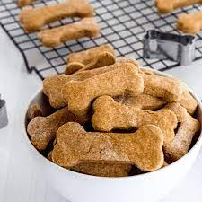

Dog Cookies

This is a recipe to make delicious cookies for dogs
Prep time: 15 mins
Bake time: 30 mins
Ingredients
- 2/3 cup - pumpkin puree
- 1/4 cup - peanut butter
- 2 large eggs
- 3 cups whole wheat flour
Steps
- Preheat oven to 350 degrees
- Line a baking sheet with parchment paper
- Attach paddle attachment to electric mixer
- Add pumpkin puree, peanut butter and eggs to bowl of electric mixer
- Beat combination on medium high until thoroughly mixed
- Switch to low speed and slowly add 2 1/2 cups flow
- Continue until flour becomes slightly incorporated
- Add remaining flour slowly until dough is no longer sticky
- Remove dough and place on lightly floured surface
- Knead dough until it comes together
- With rolling pin, roll dough to 1/4 inch thickness
- Use cookie cutters to create shapes and place onto lined baking sheet
- Bake for 30 mins or until edges are golden brown
- Let cool for 15 mins